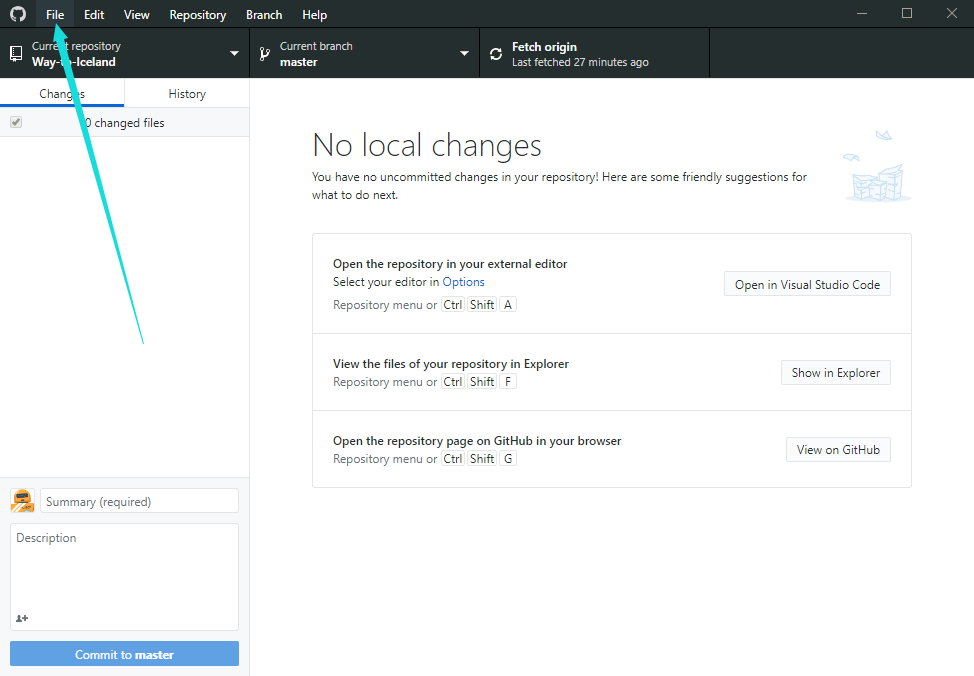
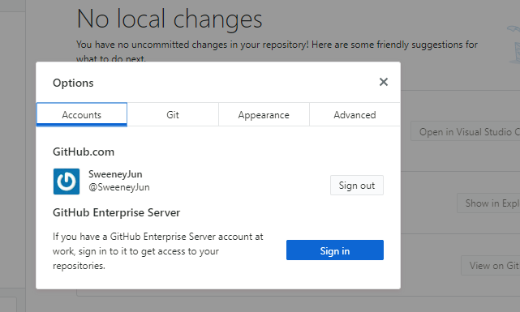
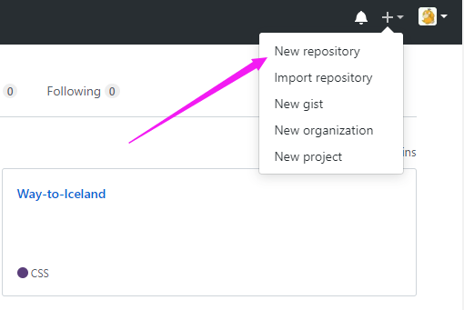
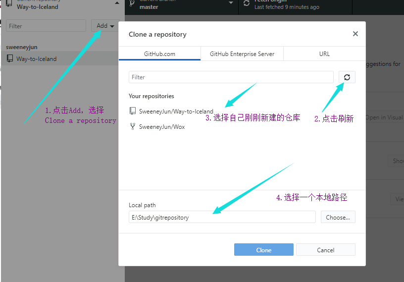
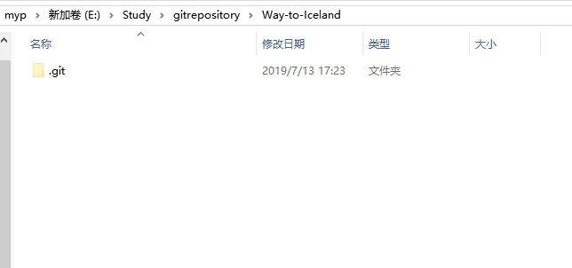
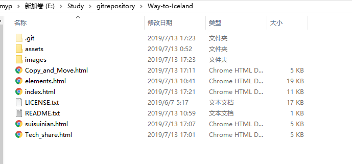
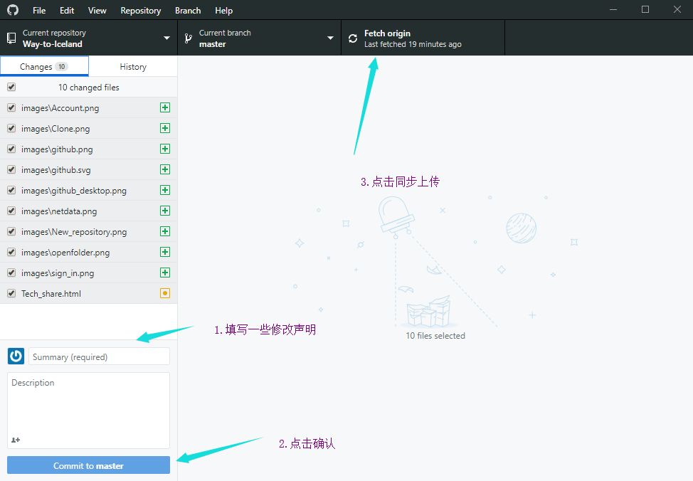
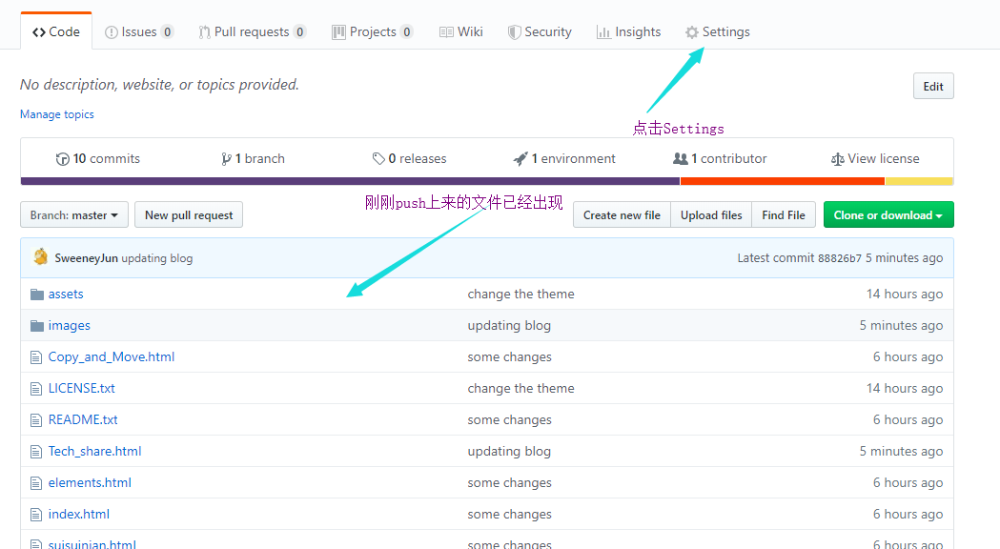
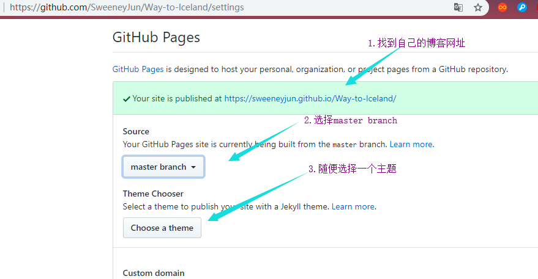
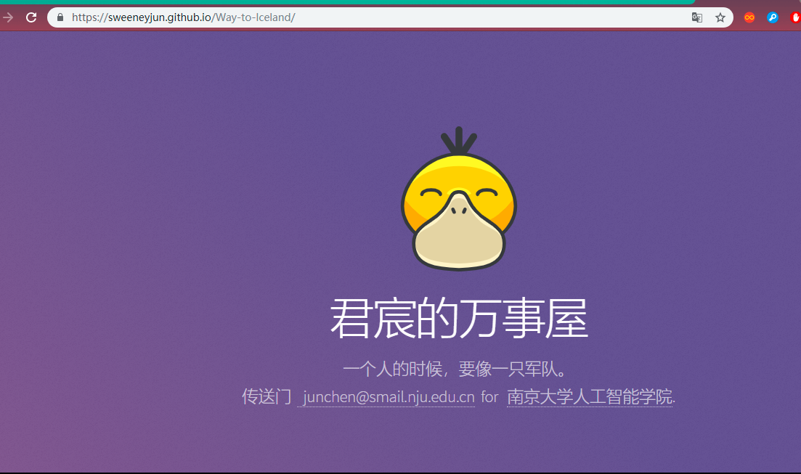

搭建一个Github Blog
1.下载Github客户端，链接如下
https://desktop.github.com/
2.按照默认设置安装以后，打开GitHub客户端，登录
File -> Options -> Accounts:

3.在GitHub上新建一个仓库

4.回到GitHub客户端，点击Add，刷新，找到刚刚新建的仓库

5.打开刚刚选择的本地文件夹

放入自己的网站文件

6.回到GitHub客户端，填写一些更改声明，然后确认 -> 上传

7.上传完成后回到网页 ->点击 Settings -> 找到自己的博客网址

更改为master branch -> 随便选择一个主题
8.在浏览器中输入该网址 -> 即可看到自己刚刚搭建的博客 -> 大功告成

搭建博客时的一些注意事项
1.网页文件模板，推荐去这儿寻找，可以免费下载并使用。
2.在第7步选择完主题后 -> 该仓库下可能会生成两个有关该主题的文件 -> 将其删除
这是一个可爱的小标题
这里是可爱小标题下的文章